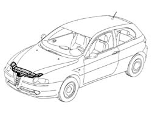
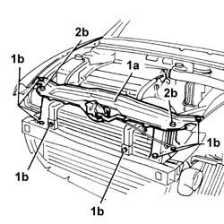
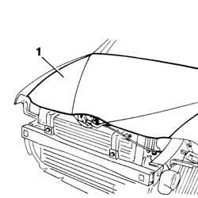

7210A15 R.R. HEADLAMP HOUSING/FRONT WING CROSSMEMBER
- Path
- Procedures > 72 PANELS AND FRAME > 7210 REMOVING REFITTING > 7210A structural elements (front part) > 7210A15 R.R. HEADLAMP HOUSING/FRONT WING CROSSMEMBER
- Kind
- repair procedure (removal / refitting; the operation number is the code)
- Applies to
- all engines; all production periods
- Interactive page
- https://sloeber94.github.io/elrnDB-a147/en/#/3025952
Applies to: all engines; all production periods
 Removing
Removing
 Refitting
RefittingCheck if any of the connected parts are deformed by checking body alignment dimensions. Use appropriate measurement tools (reference rigs, templates or gauges).
If necessary, straighten the body before removing the part.

Applies to: all engines; all production periods
1. Undo the bolts shown in the figure.
2. Remove the headlamp housing beam from the car.

Applies to: all engines; all production periods
Refitting
Removing1. Provisionally position part (1a) on the car and screw in retaining bolts (1b) without tightening.
2. Fit bonnet lid catch (2a) and both end stops (2b).

Applies to: all engines; all production periods
1. Lower the bonnet lid. Check it is properly aligned and that the gap around the edge is even.

Applies to: all engines; all production periods
Paint the headlamp housing beam in accordance with the specified cycle.
Fit both end stops to the headlamp housing beam.
Topics that link to this page (19)
- 1004B10 power unit with manual gearbox - r + r
- 1016D20 left cylinder head - r + r and replace gasket
- 1016D24 right cylinder head - r + r and replace gasket
- 1020D38 flywheel side oil seal - replace
- 1020D51 crank shaft rear mount - apply silicone to mating surfaces
- 1024B10 engine flywheel - r + r for versions with manual gearbox
- 1080B39 right catalytic preconverter r r or replace cylinder head gasket
- 1084B34 cartridge engine oil filter support - r + r
- 1088B20 engine cooling radiator - r + r
- 1088E11 fans with single engine duct - r+r
- 1810A20 clutch - r + r
- 1820A24 thrust bearing linkage - r + r
- 2110A10 manual gearbox and differential - r + r
- 2110C22 gear input shaft seals - r r
- 2710A35 intermediate drive shaft mount - r r
- 3340B56 RIGID PIPE from hydraulic CONTROL UNIT to RIGHT FRONT BRAKE - R.R.
- 5530A10 alternator - r+r
- 7210A16 R.R. WING LOWER CROSSMEMBER
- 7210A40 front side panel (level 1)